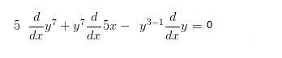
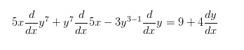

CORRECTO, muy bien has pasado a la siguiente parte
Hasta este punto es normal, sin embargo nos encontramos con diferentes casos de derivación. Si Derivamos ahora, podremos obtener el resultado siguiente:
1)
2)

3)

1
2
3